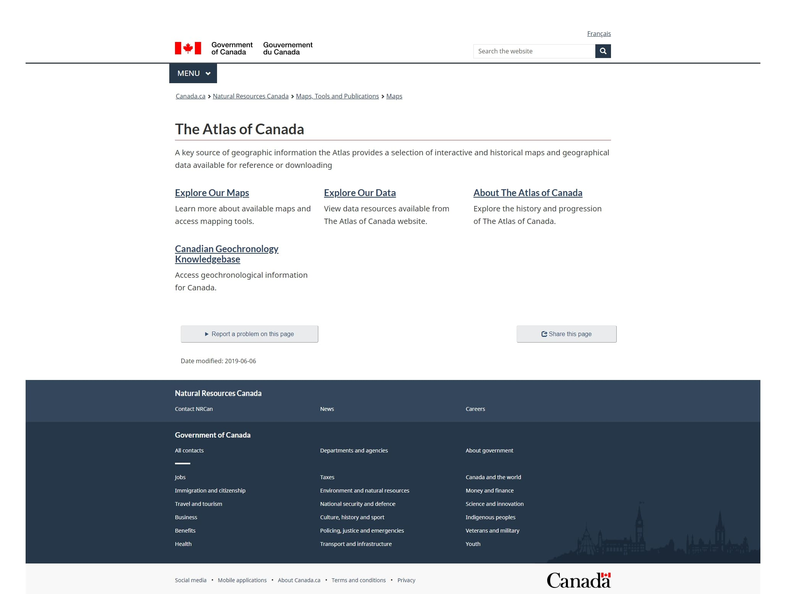

The current home page of the Atlas of Canada has room for improvement in terms of user experience design. The Federal Identity Program and the Canada Style Guide create an authoritative, professional, and trusted look and feel across all Canada.ca websites. This ensures a cohesive Canada.ca web presence and WCAG compliance.
After conducting the necessary research and planning, reorganizing the site's information architecture became possible. Next, design improvements to guide users through their journey intuitively were achieved through icons and imagery. A web banner displaying the Atlas of Canada's graphic identifier, as well as two map products combined to represent the innovation and historical significance across the Atlas was also designed.
